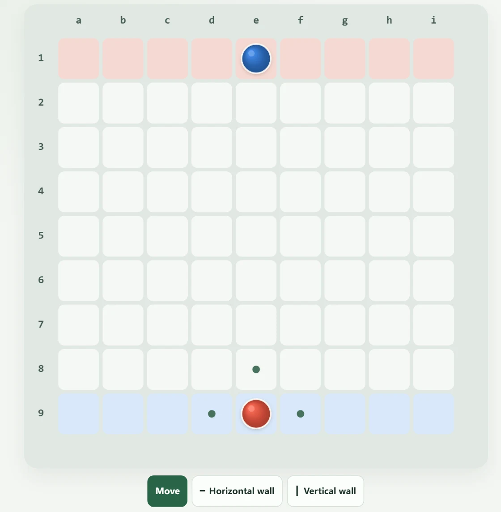
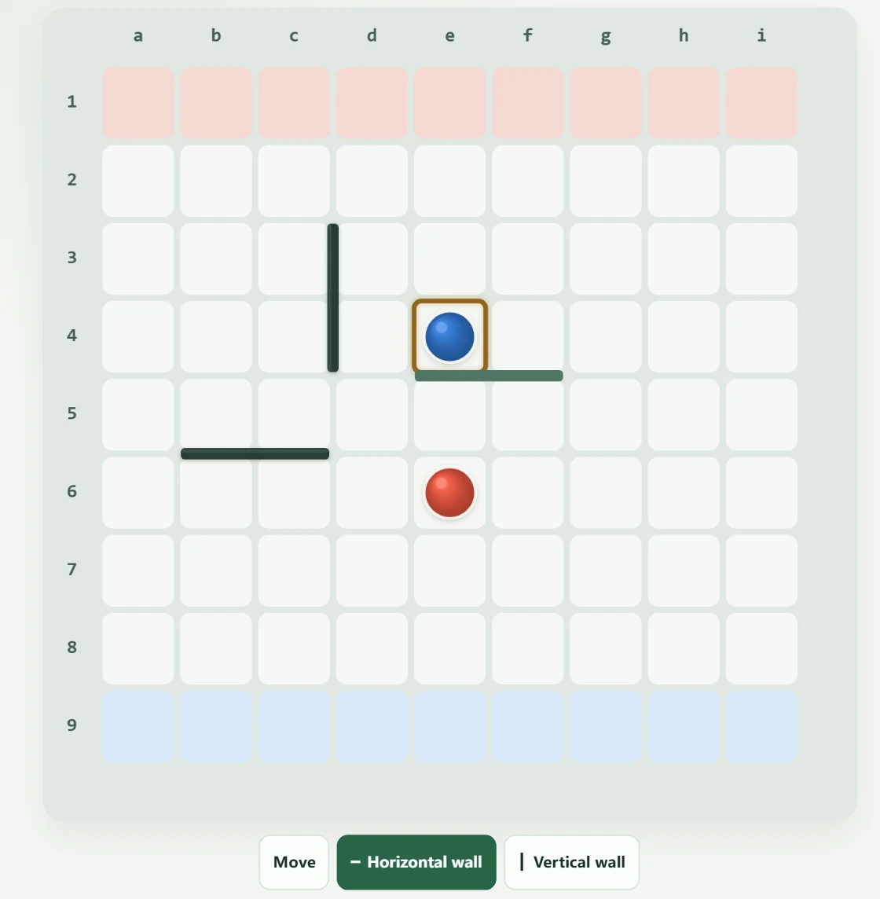
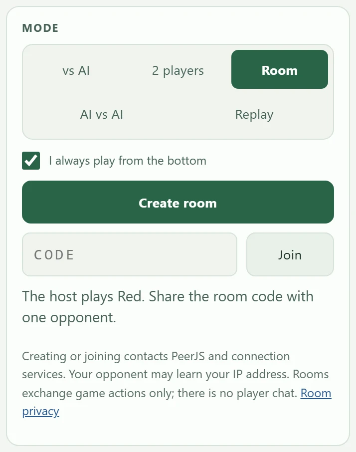
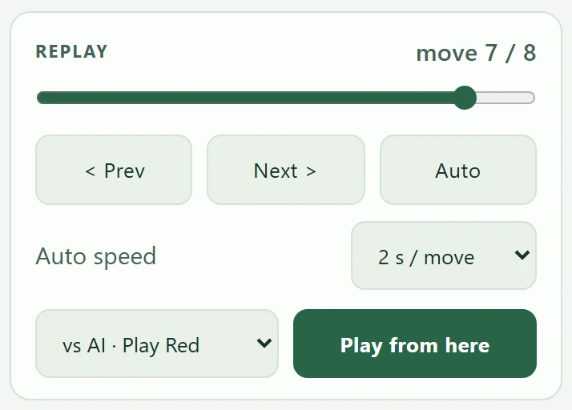
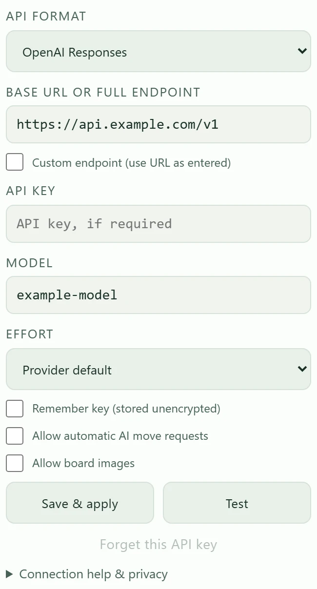

Game Guide
How to play, configure the engines, use rooms and manage your data.
This is an independent, unofficial browser implementation of the Quoridor board game. Built-in play works without an account, API key or paid AI service.
Quick start
- Choose vs AI to play against an engine, or 2 players to share one device.
- Tap one of the highlighted squares to move your pawn. You can also choose a wall control and tap a legal gap.
- Reach the opposite edge before your opponent. A wall can slow the other player, but must leave both players at least one route to their goal.
Rules
- The board has 9 × 9 squares. Each player starts with 10 walls and a pawn on the middle square of their starting edge.
- On each turn, make exactly one action: move your pawn or place one wall.
- A normal pawn move is one square orthogonally (not diagonally). If pawns meet face-to-face, jump over the opponent when the square behind is free. If a wall blocks that straight jump, move diagonally to a free square beside the opponent.
- A wall spans two square-gaps. Horizontal and vertical controls set its orientation. Walls cannot overlap or cross, and cannot seal off every route to either goal.
- The first pawn to reach the opposite edge wins. This app does not declare a draw merely because a position repeats or a move counter grows.
Board controls
Move a pawn
With Move selected, tap or click a marked square. The coordinates stay attached to their squares when you flip the view.

Place a wall
Choose a wall orientation, then tap or click the centre of a legal gap. You can also drag either wall control onto the board. Release outside the board to cancel.

Undo and switch sides
In vs AI, Undo returns to your previous turn (removing the AI reply and your last move when both have happened). In 2 players, it takes back one move. Flip sides switches the human/AI colours without restarting the current position. The “I always play from the bottom” option flips the view for readability; it does not change the rules or saved coordinates.
Game modes and records
- vs AI: Choose an engine in the engine selector. Local engines run in your browser. First use may download the selected model and runtime; once cached, the browser can reuse them. The loading indicator shows download progress.
- 2 players: Take turns on the same device.
- Room: Create a room or join with a code. The host plays Red and the guest plays Blue. After a game, the guest can request a rematch and the host can accept it from the result dialog. Rooms exchange game actions. Share your code with someone you trust.
- AI vs AI: Choose an engine for each side, press Play, and adjust the autoplay delay with the speed control. Pausing stops the next turn from starting.
- Replay: Review saved or imported games, step through moves, change replay speed, or continue a non-terminal position.


Use Undo, the replay controls, or the game log to review a match. Export a position/game as JSON to keep a copy or share it. Imported game files are checked against legal moves. Saved games are stored only in this browser and can be switched off or deleted.
AI engines and speed
Claustrophobia + Alpha-beta uses a public neural-network policy to order an independent local search. Sigma uses a policy/value network with Monte Carlo Tree Search. Alpha-beta uses a local search without neural-network inference. Engine names and time/simulation presets are shown in the selector; deeper settings usually take longer. Performance depends on the device and browser.
The built-in engines run locally after their files have loaded; they do not send your board position to an AI provider. Initial downloads can be tens of megabytes. Keep the page open while the first download and model initialization finish; later visits can reuse the browser cache, subject to browser eviction. Opening the game removes outdated versions of these files. Use Clear AI downloads in the footer to free the game’s AI cache and keep your saved games and settings. The next session that needs a cleared file downloads it again.
Optional external AI
You do not need external AI to play. To use it, select External AI, enter an endpoint and model, choose its API format, then explicitly enable and save permission for automatic move requests. The supported formats are Chat Completions, Responses and Anthropic Messages. A local model server can also be used if the browser can reach it and its CORS/local-network settings allow the request.
- Requests go directly from your browser to the endpoint you configure. If the browser reports a CORS error, check that your provider allows this site’s origin and accepts a preflight OPTIONS request. If the endpoint returns an HTML page, check the Base URL and API format.
- Chat and automatic moves for one AI seat share recent history during the game. Suggest a strategy in chat and the model can take it into account on its next turn. Both requests include the latest board and can send earlier chat to your provider. Clear this AI conversation to start over at the current board. With Allow board images enabled, the model can request one image of the current board before choosing a move.
- The provider may charge for requests, retain data or apply its own privacy and age rules. Check its terms before use. No key is needed for a service that does not require authentication.
- If a move request fails or returns an illegal move, the board waits on the same turn. Use Retry AI move to try again.
Effort sets the reasoning level for moves, chat and Test. Choose Provider default to let the service choose. Supported levels depend on the model and provider. Extra high and Max may take longer and increase provider charges. You can cancel a pending request from the game or AI controls. The provider can still enforce its own time limit.

See the privacy notice for details about API keys, requests and browser storage.
Privacy, attribution and support
Game preferences and saved moves remain in browser storage. Built-in AI models are cached locally. Optional external AI and rooms contact third-party providers. Read the Privacy & data notice and Terms of use. Third-party code and model notices are in NOTICE.md.
This page is an independent implementation, not an official Gigamic product. “Quoridor” is used only to identify the compatible game; no official artwork is included. Return to the game.